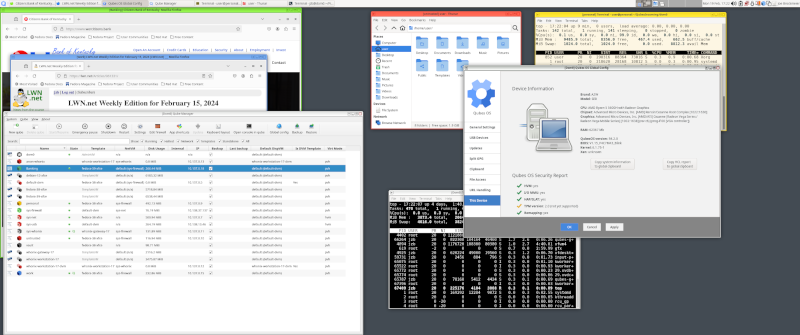
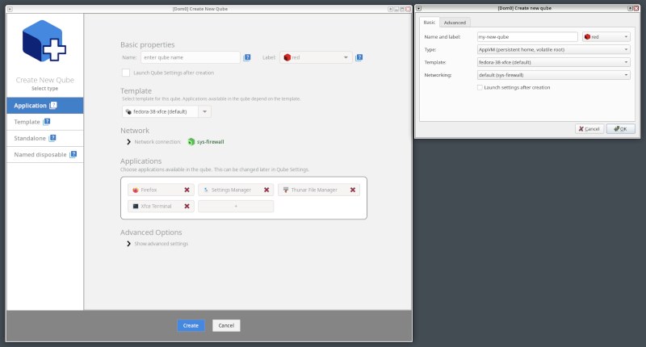

A modest update to Qubes OS
Qubes OS is a security-focused desktop Linux distribution built on Fedora Linux and the Xen hypervisor. Qubes uses virtualization to run applications, system services, and devices access via virtual machines called "qubes" that have varying levels of trust and persistence to provide an open-source "reasonably secure
" operating system with "serious privacy
". The Qubes 4.2.0 release, from December 2023, brings a number of refinements to make Qubes OS easier to manage and use.
A quick overview
Qubes OS is designed to be a single-user desktop operating system that provides strong security out of the box through isolation between applications and services, rather than trying to ensure that the applications or services are secure in and of themselves. The vision for Qubes is laid out in the Qubes OS architecture document written in 2010. While that specification isn't fully implemented yet, each release brings Qubes a bit closer to the ideal.
As currently implemented, Qubes uses the Xen hypervisor to run a Fedora-based admin qube (dom0) with direct hardware access that provides administration and orchestration of unprivileged guest domains (domU) based on templates (VM data stored as LVM volumes) that are used to run applications (app qubes) or provide services (service qubes) like networking, USB access, and more to the app qubes. For example, networking and firewall services are each provided by separate system qubes ("sys-net" and "sys-firewall", respectively), and access to USB devices is through "sys-usb". Note that the Qubes website and documentation tend to use the term "VM" and "qube" interchangeably.
Templates are the starting point for app and system qubes—app qubes take their root file system (that is, programs and system files) from templates. Any software that users want to persist in an app qube should be installed in a template, rather than an app qube, otherwise it will be discarded when the app qube restarts. If a user wants Emacs or LibreOffice, the Qubes way is to install it into one of the templates and then spin up an app qube based on that template to use the application.
Each qube has a level of trust somewhere between "unsafe and untrusted" to "safe and ultimately trusted". The admin qube, for example, is considered safe and ultimately trusted. The sys-net and sys-usb qubes are considered untrusted, and the firewall qube is considered moderately trusted. Qubes OS ties all of that together and presents the user with a coherent desktop experience. To the user, it is meant to feel like using a regular desktop environment and applications, rather than using half-dozen or more VMs that are unaware of one another. Qube windows are displayed with colored borders, to give users visual cues about which qube is running the application and its safety level.

LWN last looked at Qubes ahead of the 4.1.0 release in October 2021. That release made major overhauls to the Qubes architecture, splitting out display handling to its own domain and making changes to the Qrexec policy system. This release follows up those changes with a number of more user-visible changes such as rewrites of several Qubes GUI management tools, simpler split GPG management (which lets users store private GPG keys in a trusted qube and make use of them in less trusted qubes), changes to default Fedora and Debian templates, and more.
Qubes's approach to security means a more complex, and sometimes cumbersome, user experience. Moving from a Linux distribution like Fedora or Debian to Qubes OS will take more adjustment than one might expect. For example, installing software on a Fedora desktop is usually as simple as "dnf install package". But installing software to use within a Fedora-based qube requires several additional steps on Qubes OS, plus restarting VMs. Other activities, such as configuring a Bluetooth input or audio device is much more complicated and not well-documented. Then again, it's also not encouraged—Bluetooth isn't considered secure, so why focus on making it easier to configure? But when it comes to using Qubes OS as intended, this release includes some major work to add polish and improve the user experience.
GUI application improvements
One of the first improvements users will notice is the redesigned application menu, first made available as a preview in Qubes 4.1, and now the default. On a "normal" Linux distribution, the menu of applications generally only has to display one version of Firefox, one terminal, one file manager, and so forth. Qubes, however, helps users work more securely by compartmentalizing applications to qubes by task or profile. How users organize their work is up to them, but Qubes offers "work", "personal", and "untrusted" qubes by default—each qube with its own installation of Firefox, terminal, and file manager. (These are color coded when running, so users might see a yellow border for personal applications, a blue border for work, and red for untrusted.)
The Qubes model of separating activities into isolated compartments is good for security—users can visit untrusted sites in the untrusted qube, restrict banking to another qube, and separate work in yet another qube—but more challenging to present in a user-friendly fashion. Prior versions of Qubes had a single-menu layout that was unwieldy as the number of applications, templates, and services grew. The current application menu organizes application qubes, template qubes, and service qubes separately, and breaks out Qubes tools like the global configuration and policy editor into their own menu. The effect is still busy compared to a "regular" desktop distribution, but it does seem a marked improvement over the old menu. The ability to add applications from various qubes to a Favorites menu is a great improvement, though there is no obvious way to configure the application menu to display favorites immediately when first opened. Perhaps this will show up in the next Qubes release—if it does, it will probably appear in the Qubes global configuration application.
The global configuration application in 4.2.0 represents work that the project started discussing in September 2021. In the ticket discussing the design, Nina Eleanor Alter described target demographics for the global UI as non-technical, high-risk users, and technical users "excited about Qubes but lacking the attention span or time to copiously read whitepapers or the docs
". Alter said that Linux users may be comfortable with multiple applets to configure system behaviors but, "it delivers a poor execution and discovery experience to all users
"; and users coming from Windows or macOS expect a single settings UI.
The idea is to make Qubes more discoverable, and the new UI does this by bringing together settings for file access, clipboard handling, updates, USB devices, URL handling, miscellaneous general settings, and device information. Users have a single GUI for working with system-wide settings that were not particularly discoverable in prior versions, such as setting up split GPG.
The Create New Qube application has been updated too, though Qubes 4.2.0 seems to have shipped with the old and new applications with different labels in the Applications Menu. The new application is titled "Create New Qube" and the old application is listed as "Create Qubes VM", though both show "Create New Qube" in the title bar when running.

As shown in the screenshot, the new and improved version provides access to more options and settings, as well as some guidance provided via tooltips. (One note on tooltips in Qubes—while working in Qubes, tooltips displayed in various applications lingered long after moving the mouse, switching windows, or even navigating to another workspace.) The current iteration of the Create New Qube application does seem more intuitive than the old, and provides the ability choose the default applications available, set initial RAM for the qube, and more.
The Qubes Update application (appropriately) received an update in this release as well. Qubes includes Fedora, Debian, and Whonix templates as part of the default installation and provides access to many others. Over time it would be trivial to have half-a-dozen template OSes that need regular updates. The Update application streamlines this by checking in the background for updates and then notifying of updates for running qubes at regular intervals. It will also attempt to perform updates every seven days for templates that are not used in that timeframe, though this interval is configurable, or users can update them manually. After updates have been staged, the updater will offer to restart qubes based on the updated templates. Qubes that have running applications will not be targeted for restart by default, so users can run updates without fear that Qubes will unceremoniously shut down their work.
Template updates
Another interesting change with this release the use of Xfce editions for Fedora and Debian instead of GNOME to reduce memory usage and provide a better selection of default applications. Marek Marczykowski-Górecki said that Fedora's GNOME template has too many "problematic
" packages that "either conflict with something or simply don't work with our GUI agent
". The project had been looking for ways to slim memory usage in Fedora qubes for some time, with a number of GNOME packages targeted for exclusion, including GNOME Tracker. Note that the Qubes OS default desktop has been Xfce since the 3.2 release in September 2016.
Support for SELinux in Fedora templates has been a long time in coming. The issue tracking the work was opened in 2018, while the work finally landed in February 2023 and then made its way into the 4.2.0 release. One might wonder why exactly users might need or want SELinux in Fedora qubes, given that Qubes OS is meant to be a single-user system. Each qube is already isolated from others and and the user has full run of each qube. Templates, for example, allow sudo with no password because all of the user data in a running qube is available to the same person anyway, so there's little sense in forcing them to type a password every time they use sudo. Even though Qubes does little to restrict user privileges within each qube, Marczykowski-Górecki noted that the addition of SELinux is useful for applications that provide sandboxing inside a Fedora template, like Podman or bubblewrap, and also help provide extra hardening when using qvm-copy to send files between qubes.
A modest update
Overall, 4.2.0 is a somewhat modest update in terms of new features—though it does contain plenty of the usual version updates and bug fixes. But the focus on improving Qubes OS usability is important. While popular Linux distributions like Fedora or Ubuntu count users in the millions, the Qubes project counts its users in the tens of thousands. Surely more users need what Qubes has to offer, but security tools that are too hard to use tend not to be used. Bolstering Qubes usability is just as important as striving toward implementing the Qubes architecture specification.
| Index entries for this article | |
|---|---|
| Security | Distributions |